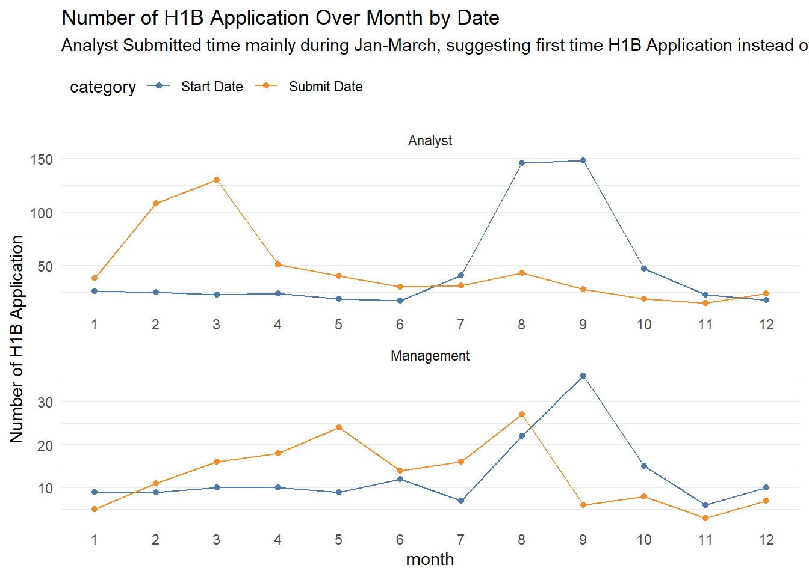
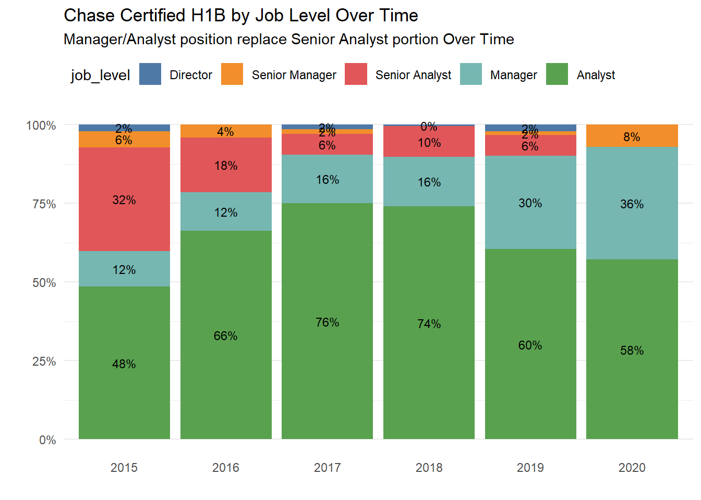
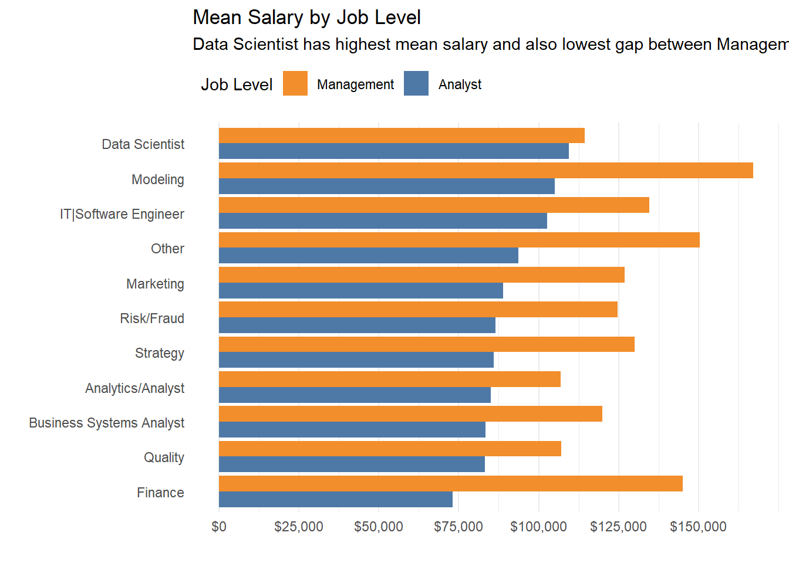
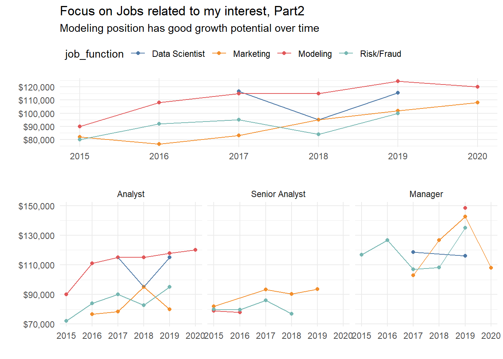

Chase Only
The reason why I Picked Chase is two fold
- Chase is the employee that sponsored the most H1B jobs
- I’m pretty familiar with Chase Job Titles and hope could find more interesting store given this info.
Data Cleaning
Before plotting anything, we need to do some data cleaning work. Mainly, I’ll use job_title column from the H1B data to create additional columns like job function,job level.
Any job that has associate/analyst keywords will belong to analyst job level and any job has manager/VP/director will belong to management job level.
de_h1b_chase<-read_in_html_tbl %>% janitor::clean_names() %>%
filter(location %in% c('WILMINGTON, DE','WILMINGTON, DELAWARE') & case_status=='CERTIFIED') %>%
mutate(salary=as.numeric(gsub(',','',base_salary)),
submit_date=lubridate::mdy(submit_date),
start_date=lubridate::mdy(start_date),
start_date_year=lubridate::year(start_date),
start_date_month=lubridate::month(start_date),
submit_date_year=lubridate::year(submit_date),
submit_date_month=lubridate::month(submit_date)
) %>% select(-base_salary) %>% filter(submit_date_year>2014 & str_detect(employer,'CHASE'))
de_h1b_chase_process<-de_h1b_chase %>% mutate(job_title=tolower(job_title),
job_function=case_when(str_detect(job_title,'tech ops|technical|database|software|engineer|application|architect|developer|infrastructure|technology') ~ 'IT|Software Engineer',
str_detect(job_title,'data scientist') ~ 'Data Scientist',
str_detect(job_title,'control|assuan|audi|loss|assurance|quality') ~ 'Quality',
str_detect(job_title,'business systems analyst|business process|business tech|business opera') ~'Business Systems Analyst',
str_detect(job_title,'finan') ~ 'Finance',
str_detect(job_title,'modeling|modeler') ~ 'Modeling',
(str_detect(job_title,'(risk|fraud)') & !str_detect(job_title,'modeling')) ~ 'Risk/Fraud',
(str_detect(job_title,'marketing') & !str_detect(job_title,'modeling') & !str_detect(job_title,'(risk|fraud)')) ~ 'Marketing',
str_detect(job_title,'strategic|strategy') ~ 'Strategy',
str_detect(job_title,'analytic|analyst') ~ 'Analytics/Analyst',
TRUE ~ 'Other'),
job_level=case_when(
str_detect(job_title,'managing|director') ~ 'Director',
str_detect(job_title,'manager|vice president|vp') & str_detect(job_title,'sr|senior|lead|ii|iii|2|3') ~ 'Senior Manager',
str_detect(job_title,'manager|vice president|vp') ~ 'Manager',
str_detect(job_title,'analyst|associate') & str_detect(job_title,'sr|senior|lead|ii|iii|2|3')~ 'Senior Analyst',
str_detect(job_title,'analyst|associate') ~ 'Analyst',
TRUE~ 'Other'),
job_level_aggregate=case_when(job_level %in% c('Director','Senior Manager','Manager') ~ 'Management',
job_level %in% c('Senior Analyst','Analyst') ~ 'Analyst',
TRUE ~ 'Other'),
it_flag=ifelse(job_function == 'IT|Software Engineer', 'IT','Non-IT'))%>% filter(job_level_aggregate %in% c('Management','Analyst'))Once we cleaned up the data, I can start to answer some questions I had in mind. ## Q1: Does File Date different by Start date/Submit Data and Job Level? As we already knew from prior table that there’s no much trend between number of h1b application and year, I’m interested to see if there’s relationship between job submitted month and job level. As we can see below, for analyst level job, the submitted time peak at March, this is probably due to for most new graduate, their first time h1b file data will be at March as that’s when lottery begins. On the contrary, Management level peak at May and August. Job submitted traffic seems to be quite low from Sep to Jan, which makes sense, as that’s usually people are waiting their bonus and company run out of budget for hiring.
de_h1b_chase_process %>% group_by(job_level_aggregate,start_date_month) %>%
summarise(count=n())%>% mutate(category="Start Date") %>%
rename(month=start_date_month) %>%
filter() %>%
bind_rows(de_h1b_chase_process %>% group_by(job_level_aggregate,submit_date_month) %>%
summarise(count=n())%>% mutate(category="Submit Date") %>%
rename(month=submit_date_month)
) %>%
ggplot(aes(x=as.integer(month), y=count, color=category))+
geom_line()+geom_point() + theme_minimal() + scale_x_continuous(breaks=seq(1:12))+
facet_wrap(~ job_level_aggregate, scales = "free",nrow = 2)+
xlab("month") +
ylab("Number of H1B Application") +
theme(legend.position="top",
legend.justification='left',
legend.direction='horizontal')+
theme(legend.position="top", panel.grid.major.x = element_blank() ,
panel.grid.minor.x = element_blank())+
ggtitle(label = "Number of H1B Application Over Month by Date",
subtitle ="Analyst Submitted time mainly during Jan-March, suggesting first time H1B Application instead of H1B Transfer" )
Q2: How Job Level changes over time?
There might exist some trend between job level over time, like what I heard from other companies have been starting to only offer H1B transfer for non-entry-level jobs. So it’s worth to check if Chase follow the same trend. Interestingly, Chase continue to hiring a lot of entry level job, and Analyst/Manager level jobs are actually growing and senior analyst proportion decreases over time.
de_h1b_chase_process %>% group_by(start_date_year,job_level) %>%
summarise(count=n()) %>%
ungroup() %>%
group_by(start_date_year) %>%
mutate(job_percent=scales::percent(count/sum(count),accuracy = 2)) %>%
ungroup() %>%
mutate(job_level=fct_reorder(job_level,count,sum))%>%
ggplot(aes(x=as.character(start_date_year),y=count, fill=job_level)) +
ggthemes::scale_fill_excel_new() +
geom_col( position ="fill" ) +
geom_text(size=3,aes(label = job_percent), position = position_fill(vjust = 0.5))+
theme_minimal()+
theme(legend.position="top", panel.grid.major.x = element_blank() ,
panel.grid.minor.x = element_blank()) +
ggtitle(label="Chase Certified H1B by Job Level Over Time",
subtitle = "Manager/Analyst position replace Senior Analyst portion Over Time") +
scale_y_continuous(labels = scales::percent) + xlab("") + ylab("") +
theme(legend.position="top",
legend.justification='left',
legend.direction='horizontal')
Q3: What Job Function has the least gap between Analyst and Management?
Interesting to see that Data Scientist is the job function with least difference between analyst and manager
de_h1b_chase_process %>% group_by(job_level_aggregate, job_function) %>%
summarise(count=n(), mean_salary=mean(salary)) %>%
mutate(job_function=fct_reorder(job_function,mean_salary,mean))%>%
ungroup() %>%
ggplot(aes(x=job_function,y=mean_salary, label=(mean_salary))) +
geom_col(aes(fill=job_level_aggregate), position = "dodge") +
coord_flip() +
theme_minimal() +
scale_y_continuous(labels = scales::dollar,
breaks = c(0,25000,50000,75000,100000,125000,150000,200000)) + xlab('') +
guides(fill = guide_legend(reverse = TRUE))+
theme(legend.position="top",
legend.justification='left',
legend.direction='horizontal',
panel.grid.major.y = element_blank(),
panel.grid.minor.y = element_blank()
) +
ylab(label = "") +
labs(fill = "Job Level")+
ggtitle(label="Mean Salary by Job Level",
subtitle = "Data Scientist has highest mean salary and also lowest gap between Management and Analyst")
Q4: How Median Salary Increases over Year?
Overall, it seems 2019 is the best timing to join Chase. Nevertheless, we only have 50 data points on 2020, so the conclusion might change if we come back later. IT Analyst level enjoys a consistent salary increase over year. Management level salary increase is higher than analyst level which is expected, but management level jobs also take a harder hit when salary decreases. Not sure this sharp salary decrease is due to few data points or forewarning for the recession.
analyst_manager_lift<-de_h1b_chase_process %>%
group_by(start_date_year,it_flag,job_level_aggregate) %>%
summarise(n(),mean(salary),median(salary),max(salary),min(salary)) %>% janitor::clean_names() %>%
select(start_date_year,job_level_aggregate,it_flag,median_salary,n) %>% group_by(it_flag,job_level_aggregate) %>%
arrange(it_flag,job_level_aggregate,start_date_year) %>% mutate(salary_increase_rate=median_salary/lag(median_salary)-1)
p4_1<-analyst_manager_lift %>% filter(!is.na(salary_increase_rate)) %>%
rename(`Job Level`=job_level_aggregate) %>%
ggplot(aes(x=start_date_year,y=salary_increase_rate)) +
geom_point() + geom_line(aes(colour=`Job Level`))+
facet_wrap(~it_flag+`Job Level`) +theme_minimal() +
scale_y_continuous(labels = scales::percent) +
theme(legend.position="top",
legend.justification='left',
legend.direction='horizontal') +
ylab('Salary Increase Rate') +
xlab("start date year") +
ggtitle(label = "Salary Increase Rate Compared to Prior Year By Job Level",
subtitle = "Management has higher increase rate compared to Analyst Levels.
IT Analyst has higher increase rate compared to Non-IT Analyst")
p4_2<-de_h1b_chase_process %>%
group_by(start_date_year) %>%
summarise(n(),mean(salary),median(salary),max(salary),min(salary)) %>% janitor::clean_names() %>%
select(start_date_year,median_salary,n) %>%
arrange(start_date_year) %>% mutate(salary_increase_rate=median_salary/lag(median_salary)-1) %>% filter(!is.na(salary_increase_rate)) %>%
ggplot(aes(x=start_date_year,y=salary_increase_rate)) +
geom_point() + geom_line()+
theme_minimal() +
scale_y_continuous(labels = scales::percent) +
theme(legend.position="top",
legend.justification='left',
legend.direction='horizontal') +
ylab('Salary Increase Rate') +
xlab("start date year") +
ggtitle(label = "Salary Increase Rate Compared to Prior Year")
gridExtra::grid.arrange(p4_1,p4_2,nrow=2,heights=c(3/4,1/4))Q5a: How is the salary distributed on the Job Function related to my background?
Since I’m a data analyst, only Data Scientist,Marketing,Modeling,Risk/Fraud would be interested to me. Modeling jobs seem to have many data points and high median/mean salary. Risk/Fraud and Marketing seems to have relatively same salary range, except Risk Senior Analyst has lower median salary than the analyst level. This makes me realized that Risk team have Analyst/Senior Analyst/Associate/Senior Associate 4 levels, my prior coding might just naively put Senior Analyst and Senior Associate into the same group, this would be a self QC during the work, but for personal blog, I think we can skip that :)
de_h1b_chase_process %>% filter(
job_function %in% c('Data Scientist','Marketing','Modeling','Risk/Fraud')) %>%
filter(job_level %in% c('Analyst','Senior Analyst','Manager')) %>%
mutate(job_level=fct_reorder(job_level,salary,min)) %>%
ggplot(aes(x=job_level,y=salary, colour=job_function)) +
geom_boxplot() +
geom_jitter(width = 0.1, alpha=0.7)+
ggthemes::scale_color_excel_new()+
facet_wrap(~ job_function) + theme_minimal() +
theme(strip.text.x = element_text(size = 10, face = "bold"),
legend.position = "none")+
scale_y_continuous(labels = scales::dollar) +
xlab("")+ylab("") +
ggtitle(label = "Focus on Jobs related to my interest",
subtitle = "Modeling jobs seem to have many data points and high median/mean salary")
Q5a: How are the salary increases over year?
An immediate follow up question would be, which job function has consistent growth rate over year. Overall trend, the modeling job enjoys its annual salary boost, and Marketing salary is also catching up, but if we look at closely, the increase is probably duo to higher Salary increase in Management level.
p5_1<-
de_h1b_chase_process %>% filter(
job_function %in% c('Data Scientist','Marketing','Modeling','Risk/Fraud')) %>%
filter(job_level %in% c('Analyst','Senior Analyst','Manager')) %>%
group_by(start_date_year,job_function) %>% summarise(salary=median(salary)) %>% ungroup() %>%
ggplot(aes(x = start_date_year, y=salary, color=job_function))+
geom_point() + geom_line() +
scale_y_continuous(labels = scales::dollar) +
xlab("")+ylab("") + theme_minimal()+
theme(legend.position="top",legend.justification='left',
legend.direction='horizontal', panel.grid.minor.x = element_blank()) +
ggthemes::scale_color_excel_new() +
ggtitle(label = "Focus on Jobs related to my interest, Part2",
subtitle = "Modeling position has good growth potential over time")
p5_2<-de_h1b_chase_process %>% filter(
job_function %in% c('Data Scientist','Marketing','Modeling','Risk/Fraud')) %>%
filter(job_level %in% c('Analyst','Senior Analyst','Manager')) %>%
mutate(job_level=fct_reorder(job_level,salary,min)) %>%
group_by(job_level,start_date_year,job_function) %>% summarise(salary=median(salary)) %>% ungroup() %>%
ggplot(aes(x = start_date_year, y=salary, color=job_function))+
geom_point() + geom_line() +
facet_wrap(~job_level) +
scale_y_continuous(labels = scales::dollar) +
xlab("")+ylab("") + theme_minimal()+
theme( panel.grid.minor.x = element_blank(),
legend.position = "none") +
ggthemes::scale_color_excel_new()
gridExtra::grid.arrange(p5_1,p5_2,nrow=2)
#Takeaway This blog post aims to understand how H1B salary in chase, Wilmington distributed. Couple worth noting things：
- Chase is the largest H1B file company
- Good timing for applying Non-Entry level jobs would be March-Aug
- Modeling/Data Scientist has the highest paid entry level job positions.
- Marketing Job has nice salary increase trend
- All Job salary decreases in 2020, which it’s hard to tell from now this is due to few data points or forewarning for the recession